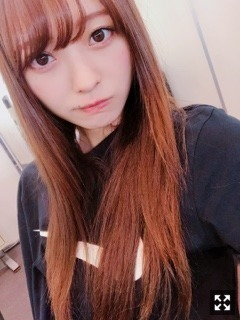
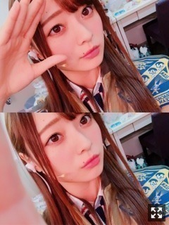
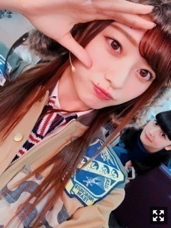
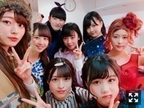
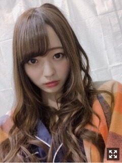

今更とか言わないで星の王女さまだよ
みなさまこんにちは！！
乃木坂46 ３期生の
梅澤美波です！

どうもどうも
今日、今年はじめて
半袖で外出ました！
夜寒いかな〜思ったら
全然暑すぎてびっくり！
散歩が気持ちいい時期になったね☺︎
この間少し時間が出来たので
張り切って買い物行ったら
張り切ってる時に限って
理想のお洋服に出逢えないんだよね( .. )
いつも私ってそう（笑）
だいぶというかかなり遅くなりましたが
星の王女さまについて！
文字にして保存していたものの
タイミングが合わずずっと更新出来ていませんでした、、
もう今更かなあと思ったけど
やっぱり更新する！
舞台「星の王女さま」
千穐楽を迎えました！！
(今更とか言わないで（笑）
長くなるけどちょっと喋ります。（笑）
喋るじゃないか、書くのか（笑）
３期生８人で舞台やります
と言われた時、涙がぶわああっと（笑）
自分でも驚きました（笑）
その時の私は、頑張れる場所を
１番に求めていたから
嬉しかったんだと思います！
決まった時は不安より
嬉しさとか楽しみの方が多くて
ずっとわくわくしてた。☺︎
でも毎日の稽古がはじまって
上手くいかないこととか
色々思うことが増えていくにつれて
私たちは今、
一番頑張らければいけない時なのになあって
色々考えたりもして、
自分の意思を強く持って
それを貫き通すことってすごく苦しかったりするんです、
全然簡単なことではなくて
あるべき自分であり続けるのが
苦しかったりもしました、
目の前にしていることから目を背けたくなったことも多々あったなあ( .. )
けど、舞台本番の毎日は
びっくりするくらい楽しかった！
毎日リンドバーグになれる
その嬉しさがおっきくて
１日１公演の日は寂しさも感じるくらい！
この８人で舞台やるのも
間違いなく最後だったと思うし
貴重でかけがえのない時間だったんだなあって今振り返ってみて改めて思います。
カーテンコールのときに
順番で話せる機会が多かった今回の舞台では
たくさん話させて頂いたけど
いつもメモ帳に話す内容を考えるのだけど
それを見返してみたら
色んな単語が並んでて
よくこの言葉が浮かんできたなあって思うような言葉がそこには書いてあって
その時の私はこの舞台で頭がいっぱいで
色んなことを考えていたんだなあって
必死だったんだなあってちょっと笑っちゃいました（笑）

この衣装暑かったけど
好きだったなあ
空席が見えて悔しかったのも
満席のステージにしか立ったことが無かった私達には必要な光景であり、
必要な気持ちだったと思います。
ある日の３階席には誰もいなかった
公演が終わって悔しくて泣いた
だから、もっと頑張ろうと思えました！
初めてたったステージは
満席の武道館。
人がいっぱいのステージしか
経験してなかった
大きなきっかけになる気がしました
これが今の私たちの実力だから∠( ˙-˙ )／
悔しい気持ちも全部私の原動力！
こう思えている今の私に
あの時よりちょっと強くなったねと言葉をあげようと思います。（笑）
壊れるんじゃないかなってくらいの
プレッシャーがすごく覆いかぶさってきて
どうにかなりそうになった時もあったけど
今こうして満足した気持ちでいられるのも
応援して下さった皆様がいたからです。
カーテンコールになり
リンドバーグから梅澤美波になって
そこで客席を見渡して
たくさんのお客様にお越しいただいている目の前にする光景に、感動する毎日でした。
知ってる顔が見えたり
そんな日は安心したり
泣いてるすすり泣きの声が聞こえたり
笑顔が見えたり
毎日幸せでした！
全１８公演、
足を運んでくださった皆様に。
そして、遠くから応援して下さった皆様に。
本当にありがとうございました！

ありがとうリンドバーグ
ほんでだいすきなどれみちゃん
今はセラミューの稽古をしていて
毎日勉強することばかりです。
一から新しいことに
チャレンジしている！
楽しい稽古場の雰囲気が大好き！
上手くできずに落ち込むことも
悩むこともあるけど
周りにいる先輩や
キャストの皆様が本当に優しくて
今日も終わったあと練習に付き合ってくれたり
エスコートしてくださったり
すごく幸せな環境です！
大好きな作品に携われて
本当に幸せです！
本番まで頑張るぞー！

これは王女さま本番初日の写真〜
初日の夜に
稽古終わり携帯を見たら
あやとたまみとれんかから動画が来てて
「うめに会いたいよ〜」
って連呼してるかわい子ちゃんたちがいて
しかも、
でんとじゅんなさんからも
「うめ〜」って動画がきてて
もうなんか涙でそうになって
早くみんなに会いたい！と思った(；；)
だからわたしもがんばる！
たくさんのコメントありがとうございます、
本当にめっちゃ元気出るの
コメントみると(；；)
お仕事行く前にみて
頑張る活力にしています、
はやく皆様に会いたい！
次の握手会もたのしみにしています！

パジャマでばいばい
おやすみ！
毎日ほんとに難しいことだらけで落ち込むことが多いの( .. )
でもやるしかないし楽しいのには変わりないからがんばる！
だから一緒にがんばろな☺︎
Original：https://www.nogizaka46.com/s/n46/diary/detail/44941?ima=4954&cd=MEMBER